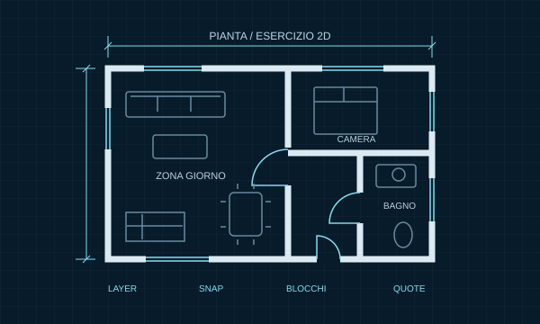
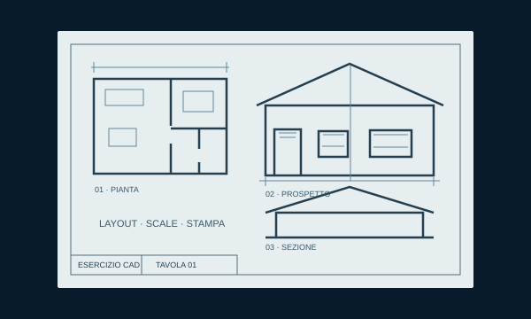

01 / DISEGNO 2D
Disegnare con precisione
Le basi per creare e gestire un disegno ordinato.
- Coordinate, snap e comandi
- Layer, blocchi, retini e riferimenti
- Piante, prospetti, sezioni e dettagli
1 persona, 1 percorsoObiettivi e ritmo scelti insieme
Tu disegni, io ti seguoCondivisione schermo e pratica
Dal primo comando al progettoPer studenti e professionisti
IL VANTAGGIO DI UNA LEZIONE INDIVIDUALE
Un percorso personalizzato parte da quello che sai già e da ciò che vuoi ottenere. Possiamo riprendere le basi, risolvere un dubbio o migliorare una tavola che stai preparando.
Durante la videoconferenza condividi lo schermo, provi i comandi e correggiamo insieme gli errori. Il ritmo si adatta a te.
Mi racconti il tuo livello, cosa studi o su quale problema vuoi lavorare.
Spiegazione, esercizio e feedback: ogni passaggio ha un’applicazione concreta.
Ripeti il procedimento e lo applichi a un caso diverso, fino a comprenderlo.
IL PROGRAMMA SI ADATTA A TE
Scegliamo gli argomenti utili per il tuo livello. Puoi seguire un corso progressivo oppure concentrarti su un’esigenza precisa.

01 / DISEGNO 2D
Le basi per creare e gestire un disegno ordinato.

02 / LAYOUT E STAMPA
Dal file DWG a elaborati leggibili e impaginati.
03 / MODELLAZIONE 3D
Dalla rappresentazione piana ai volumi.
Esempi grafici illustrativi. Gli esercizi vengono scelti in base al tuo percorso.
DA DOVE PARTI?
Prendi confidenza con l’interfaccia, i comandi e un metodo semplice da seguire.
Ripetizioni per CAT, istituti tecnici, architettura e ingegneria, seguendo il programma del docente.
Lezioni per geometri, architetti e ingegneri: organizzazione DWG, precisione e problemi reali.
IL DISEGNO È IL PUNTO DI PARTENZA
Dal disegno CAD al modello, fino alla rappresentazione del progetto: capire la geometria rende più consapevole ogni scelta.
Illustrazione concettuale generata con IA. Il percorso offerto è dedicato ad AutoCAD 2D e 3D; il render mostra una possibile applicazione successiva.
UN INIZIO SEMPLICE, UN PREZZO CHIARO
La prima sessione serve a capire il tuo livello, chiarire i dubbi iniziali e individuare gli argomenti da affrontare.
Durata e frequenza delle lezioni successive si concordano insieme.
Online, senza impegno.
Lezioni, corsi e ripetizioni
personalizzati AutoCAD 2D e 3D.
La tariffa riguarda le lezioni. Licenza AutoCAD e costi degli esami ufficiali non sono inclusi.
ESPERIENZE DI CHI HA IMPARATO CON ME
Andrea è molto professionale, preparato e mette a proprio agio durante la lezione. Super consigliato!!! :)
Lucia C. · Lezioni AutoCADAndrea è un bravo insegnante, chiaro, semplice e passo passo ti aiuta a comprendere come usare i comandi e le scorciatoie più semplici. Ha anche tanta pazienza.
Michela F. · Ripetizioni AutoCADIl suo insegnamento è chiaro e diretto.. veramente ho visto notevoli miglioramenti.
Dino P. · Corso AutoCADMi ha aiutato tanto con le ripetizioni di AutoCAD e sono migliorato nel rendimento e nelle verifiche.
Loris C. · Ripetizioni scolasticheMi ha aiutato a capire le coordinate polari e cartesiane, molto bravo e chiaro.
Hassan Y. · Lezioni AutoCADSe pubblicata, la recensione apparirà con il nome e la sola iniziale del cognome: Nome C.
In videoconferenza, con condivisione dello schermo. Ti mostro un procedimento, lo provi sul tuo computer e correggiamo insieme gli errori. Piattaforma e orari vengono concordati prima dell’incontro.
Sì. Possiamo costruire un corso AutoCAD da zero, lavorare su un dubbio specifico oppure riprendere il programma di scuola o università. Porta gli esercizi e le consegne del docente.
La prima sessione di 30 minuti è gratuita e senza impegno. Valutiamo livello, obiettivi e percorso. Se prosegui, le lezioni individuali costano 15 €/ora. La tariffa non comprende la licenza software né eventuali esami ufficiali.
La versione preferenziale e suggerita è AutoCAD italiano 2027, ma non è obbligatoria: va bene anche un’altra versione italiana o inglese, compatibile con gli argomenti scelti. AutoCAD deve essere installato, attivato con una licenza valida e funzionante.
Se usi AutoCAD LT, concordiamo un percorso 2D: le funzioni di modellazione 3D richiedono una versione adatta.
AutoCAD funzionante, mouse, microfono, webcam e una connessione stabile anche in upload. Il computer deve gestire insieme il disegno, la videoconferenza e la condivisione dello schermo. Gli studenti e i docenti idonei possono verificare l’accesso a Autodesk Education sul sito ufficiale.
Sì, per gli argomenti AutoCAD previsti dal programma scolastico o universitario, anche in vista della maturità. Per le certificazioni concordiamo la preparazione sugli obiettivi dell’esame scelto.
La preparazione è indipendente: Andrea è certificato Autodesk Certified User (ACU), ma queste lezioni non rilasciano una certificazione ufficiale. Iscrizione, costi e rilascio spettano ai canali ufficiali ACU e ACP. Il superamento dipende dalla preparazione e dalla prova.
È un percorso dal vivo, individuale e interattivo. Puoi fare domande, fermarti su un passaggio e scegliere gli esercizi in base ai tuoi obiettivi. Video e tutorial possono essere utili per ripassare; qui hai anche un confronto diretto mentre lavori.
IL PROSSIMO PASSO È IL TUO
Scrivimi cosa vorresti imparare o quale problema vuoi risolvere. Ti ricontatterò personalmente per concordare i 30 minuti gratuiti.
Bastano nome ed email. I campi con * sono obbligatori.